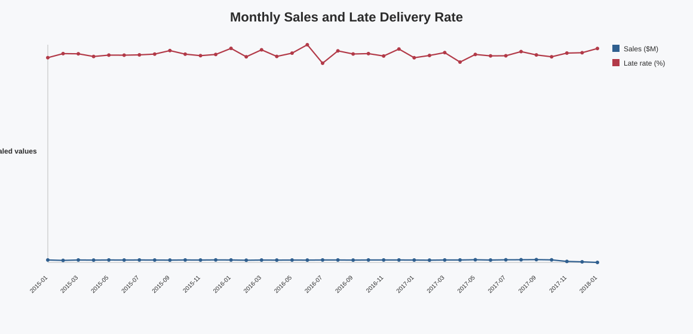
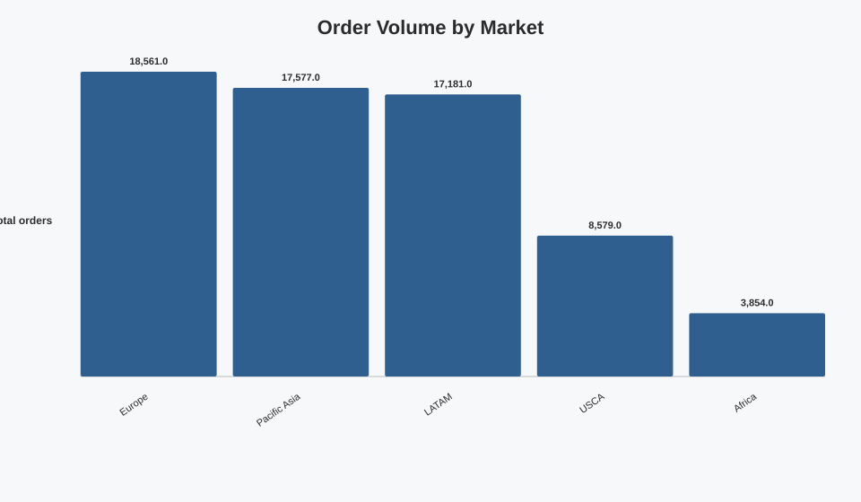
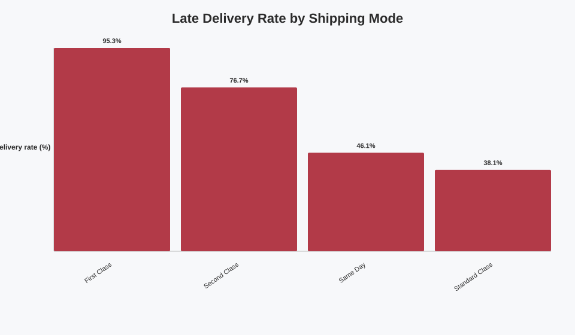
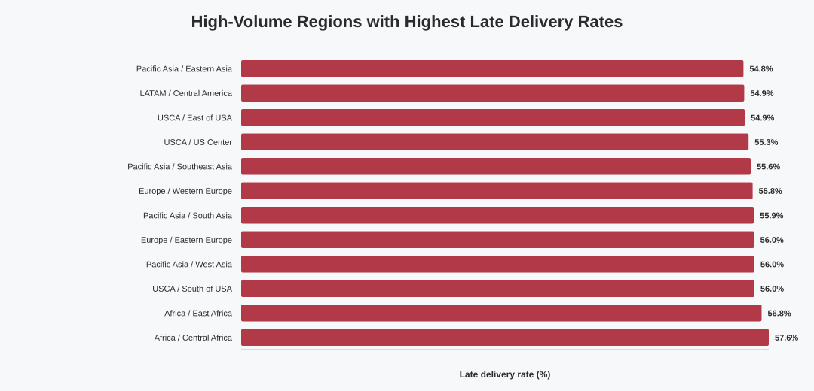
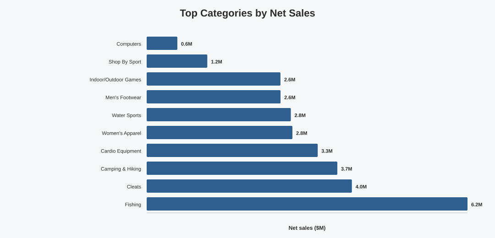
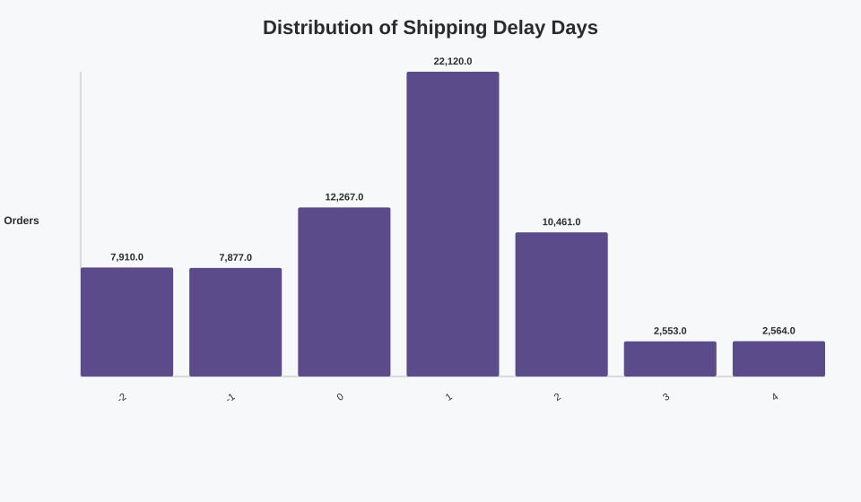

Total Sales
$33,054,402.4
Total Profit
$3,966,903.0
Profit Margin
12.0%
Total Orders
65,752
Late Delivery Rate
54.8%
Avg Shipping Delay
0.6 days
Monthly Sales And Late Delivery Trend

Market Order Volume

Recent Monthly Performance
| Order Year Month | Total Orders | Total Sales Display | Late Delivery Rate Display |
|---|---|---|---|
| 2017-02 | 1614 | $891,924 | 54.5% |
| 2017-03 | 1782 | $942,290 | 55.2% |
| 2017-04 | 1739 | $932,318 | 52.7% |
| 2017-05 | 1763 | $993,199 | 54.7% |
| 2017-06 | 1676 | $927,446 | 54.4% |
| 2017-07 | 1776 | $992,423 | 54.4% |
| 2017-08 | 1768 | $996,508 | 55.5% |
| 2017-09 | 1723 | $1,027,112 | 54.6% |
| 2017-10 | 2101 | $966,081 | 54.1% |
| 2017-11 | 2055 | $563,393 | 55.1% |
| 2017-12 | 2124 | $452,742 | 55.2% |
| 2018-01 | 2123 | $297,952 | 56.3% |
Late Delivery Rate By Shipping Mode

Shipping Mode Performance
| Shipping Mode | Total Orders | Late Delivery Rate | Avg Delay Days | Total Sales |
|---|---|---|---|---|
| First Class | 10079 | 95.3% | 1.0 | $5,100,451 |
| Second Class | 12778 | 76.7% | 2.0 | $6,416,529 |
| Same Day | 3571 | 46.1% | 0.48 | $1,745,202 |
| Standard Class | 39324 | 38.1% | -0.0 | $19,792,221 |
High-Volume Regions With Highest Late Delivery Rates

Regional Risk Table
| Market | Order Region | Total Orders | Late Delivery Rate | Avg Delay Days | Total Sales |
|---|---|---|---|---|---|
| Africa | Central Africa | 556 | 57.6% | 0.64 | $292,913 |
| Africa | East Africa | 613 | 56.8% | 0.59 | $338,054 |
| USCA | South of USA | 1345 | 56.0% | 0.6 | $706,904 |
| Pacific Asia | West Asia | 2022 | 56.0% | 0.58 | $1,056,081 |
| Europe | Eastern Europe | 1292 | 56.0% | 0.59 | $696,307 |
| Pacific Asia | South Asia | 3335 | 55.9% | 0.6 | $1,397,365 |
| Europe | Western Europe | 10010 | 55.8% | 0.59 | $5,296,003 |
| Pacific Asia | Southeast Asia | 4356 | 55.6% | 0.58 | $1,738,553 |
| USCA | US Center | 1935 | 55.3% | 0.57 | $1,034,129 |
| USCA | East of USA | 2323 | 54.9% | 0.58 | $1,231,955 |
| LATAM | Central America | 9396 | 54.9% | 0.57 | $5,093,850 |
| Pacific Asia | Eastern Asia | 3318 | 54.8% | 0.57 | $1,334,313 |
Top Categories By Net Sales

Category Profitability
| Category Name | Total Orders | Total Sales | Total Profit | Profit Margin |
|---|---|---|---|---|
| Fishing | 15164 | $6,226,935 | $756,221 | 12.1% |
| Cleats | 20386 | $3,982,857 | $494,637 | 12.4% |
| Camping & Hiking | 12299 | $3,700,784 | $427,456 | 11.6% |
| Cardio Equipment | 11355 | $3,320,251 | $383,011 | 11.5% |
| Women's Apparel | 17869 | $2,828,708 | $350,421 | 12.4% |
| Water Sports | 13758 | $2,798,044 | $325,147 | 11.6% |
| Men's Footwear | 18783 | $2,598,494 | $311,903 | 12.0% |
| Indoor/Outdoor Games | 16623 | $2,596,454 | $318,451 | 12.3% |
| Shop By Sport | 10136 | $1,177,186 | $129,814 | 11.0% |
| Computers | 442 | $595,395 | $69,657 | 11.7% |
| Cameras | 592 | $240,497 | $30,290 | 12.6% |
| Garden | 484 | $231,765 | $33,443 | 14.4% |
Market Performance
| Market | Total Orders | Late Delivery Rate | Avg Delay Days | Total Sales |
|---|---|---|---|---|
| Europe | 18561 | 54.9% | 0.57 | $9,769,198 |
| Pacific Asia | 17577 | 55.3% | 0.58 | $7,434,263 |
| LATAM | 17181 | 54.4% | 0.56 | $9,235,762 |
| USCA | 8579 | 54.8% | 0.57 | $4,553,500 |
| Africa | 3854 | 54.1% | 0.55 | $2,061,679 |
Shipping Delay Distribution

Analytical Guardrails
This dashboard avoids unsupported causal claims. Late delivery findings are prioritization signals for review by market, region, category, and shipping mode.
Dashboard measures follow the documented filter context for order-level delivery and item-level commercial KPIs.
Validation: Python and SQL KPI reconciliation passed with zero material differences.